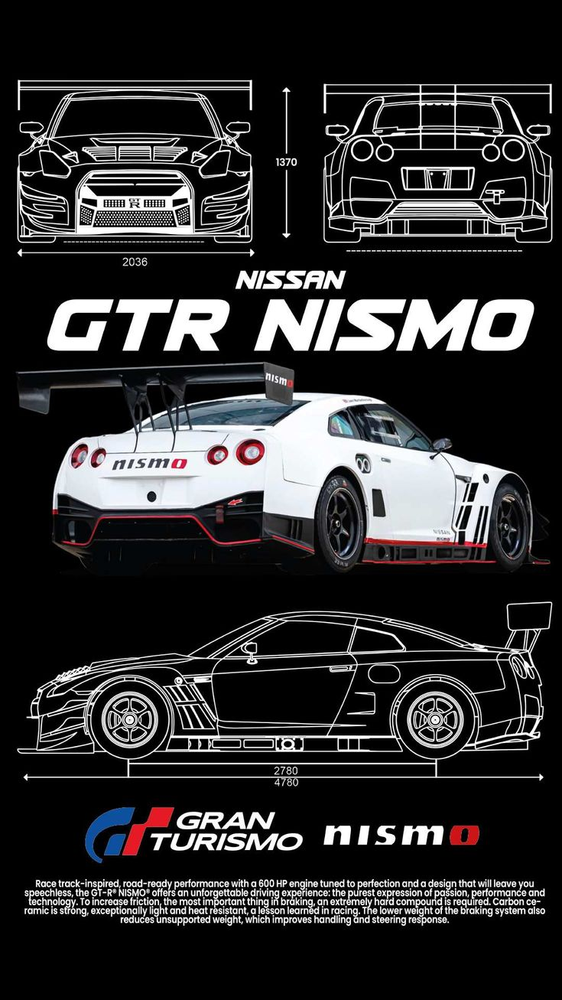
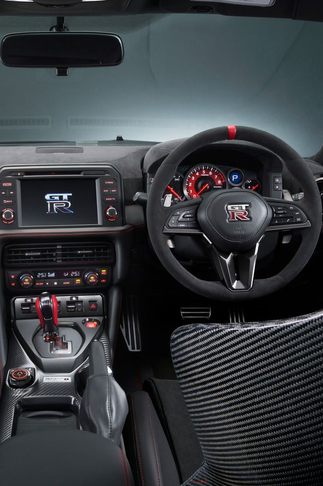

El diseño exterior del GT-R Nismo está completamente enfocado en el rendimiento. Cuenta con un enorme alerón de fibra de carbono inspirado en los autos de carreras GT3 y tomas de aire rediseñadas que optimizan el flujo del viento.
La ligereza es clave, por lo que el capó, el techo y los guardabarros están fabricados en fibra de carbono para reducir el peso al mínimo.

En el interior, la experiencia es de puras carreras. Los asientos de competición firmados por "Recaro" sostienen el cuerpo a la perfección en las curvas rápidas
mientras que el volante y el tablero están tapizados en Alcantara con detalles en color rojo, el sello distintivo de las versiones Nismo.
